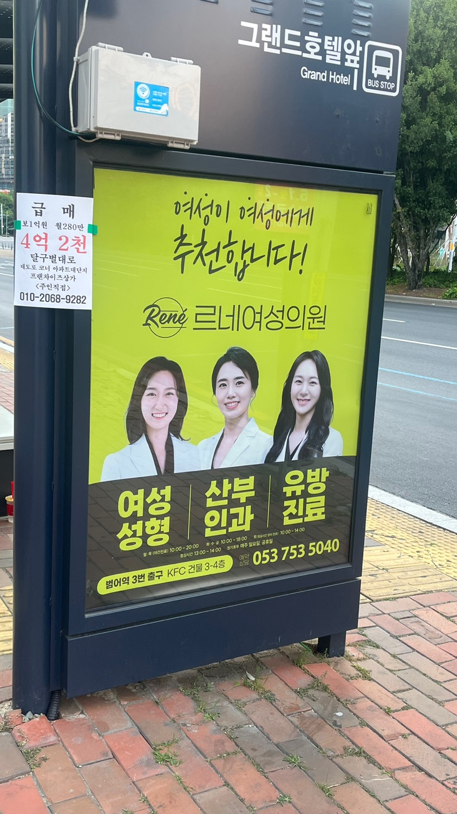
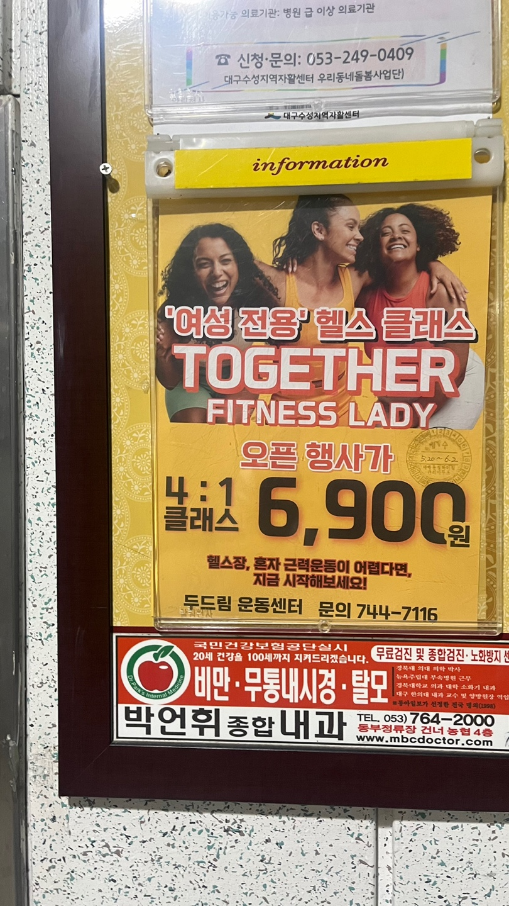
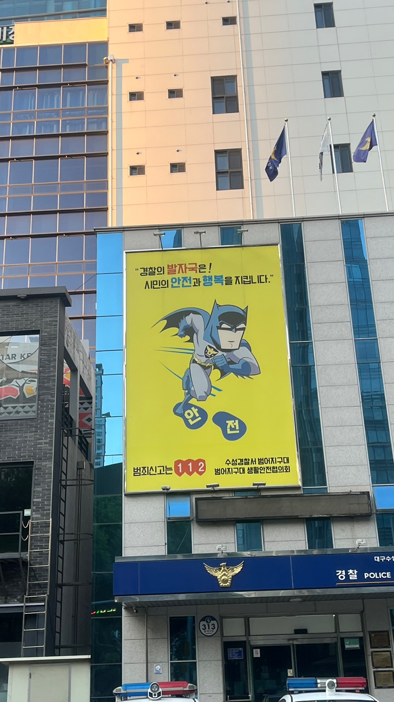
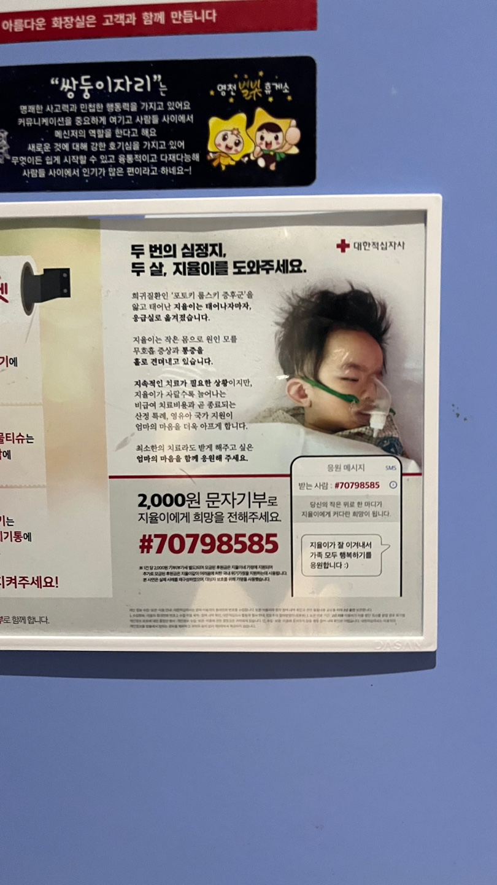
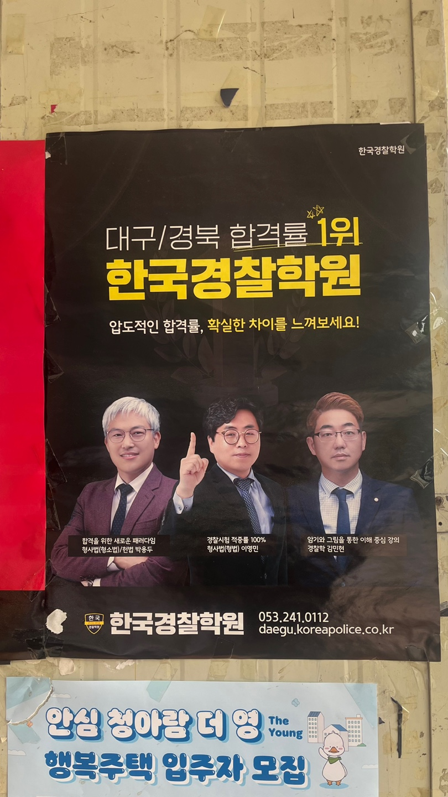
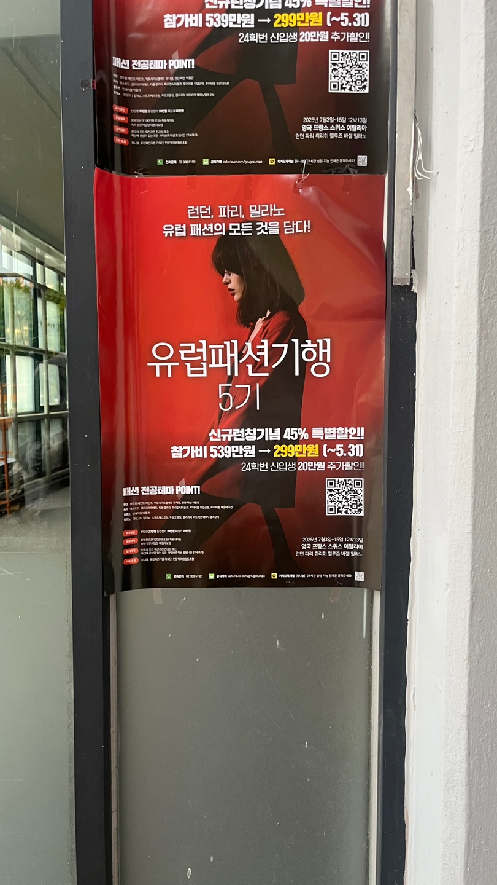

1
여성병원 광고이다. 여성 의사 선생님 3명이 모델로 등장함으로써 전문성과 신뢰성을 강조할 수 있다. 여성 의사들의 전문성과 역량을 강조하여 여성 환자들에게 안심과 신뢰감을 전달할 수 있다.
2
남자 의사가 환자에게 주사를 놓는다. 의사는 남성일 필요가 없으며, 환자 역시 특정 성별에 제한되어서도 안된다. 사진은 성별에 대한 고정 관념을 깨는 데 기여할 수 있어야 한다.
3
헬스장 광고는 종종 건강, 활기찬 삶의 이미지를 전달하기 위해 설계된다. 여기는 외국인 모델을 사용했다. 한국에 있는 헬스장 광고인데 왜 한국인 모델을 쓰지 않았을까 생각이 들었다.
4
경찰서 앞에 붙어 있던 광고이다. 배트맨은 슈퍼 히어로와 영웅의 대명사와도 같은 캐릭터이다. 근데 생각해보면 여성 영웅은 거의 없다. 이것은 성 역할에 대한 고정 관념이라고 생각한다.
5
대한적십자사의 광고에 사용된 아기 사진은 가족과 사랑의 상징으로 사용될 수 있다. 아기는 보통 가족의 행복과 안전을 상징하는데, 대한적십자사의 미션과 부합하다. 이를 통해 대한적십자사의 메시지가 더욱 강조되고 인상 깊게 전달될 수 있다.
6
임플란트 광고이다. 치과 광고를 보면 항상 어르신들의 사진이 함께 붙어있다. 특히 임플란트를 광고하는 거라면 더욱 그렇다. 이는 일반적으로 노인들이 치아 문제와 관련된 치료나 치아 보존에 대한 관심이 많기 때문이다. 노인 모델을 사용함으로써 현실 세계에서의 사용성을 반영할 수 있다.
7
안경 낀 의사가 팔을 꼰 자세로 있다. 안경 하나만으로도 똑부러진 느낌을 준다. 광고에 남자 의사를 쓴 것은 보편적이라고 생각한다.
8
경찰의 남녀 비율이 남자가 많다. 이는 성 역할 고정 관념과 문화적 편견을 기여할 수 있다. 그러나 사회적인 변화와 다양성을 존중하는 관점을 반영하여 여성 경찰을 더욱 포함시키는 노력이 필요다.
9
모델답게 옷을 걸쳐도 말라보이는 게 티가 난다. 사진 속 모델의 모습이 우울해보인다. 미의 기준에 맞추려고 애쓰는 느낌이 났다.
10
 픽토그램은 복잡한 메시지를 간결하고 직관적으로 전달할 수 있다. 단순화한 그림과 같이 있어 이해를 도운다.
픽토그램은 복잡한 메시지를 간결하고 직관적으로 전달할 수 있다. 단순화한 그림과 같이 있어 이해를 도운다.